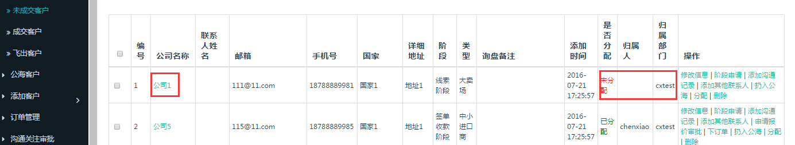
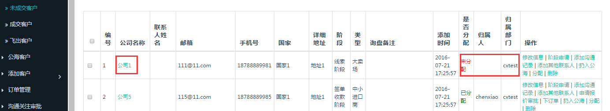

第六部分 CRM管理
4. 公海客户
4.1从公海抓取客户的规则？
抓取
业务经理和业务员从公海抓取客户，均是抓取到自己名下，自己跟踪。如业务经理cxtest抓取“杭州智慧鸟科技”客户。抓取时候归属人是自己。
分配
如果业务经理想要抓到自己名下，然后再分配，需要进行分配操作而不是抓取操作。经理分配给自己没有选择业务员，是未分配状态，没有归属人。

抓取
业务经理和业务员从公海抓取客户，均是抓取到自己名下，自己跟踪。如业务经理cxtest抓取“杭州智慧鸟科技”客户。抓取时候归属人是自己。
分配
如果业务经理想要抓到自己名下，然后再分配，需要进行分配操作而不是抓取操作。经理分配给自己没有选择业务员，是未分配状态，没有归属人。
